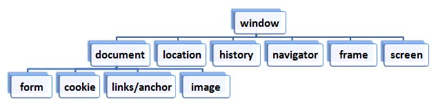

브라우저에 내장된 객체를 브라우저 객체라 한다. window는 브라우저 객체의 최상위 객체이다. window 객체는 하위 객체를 포함하고 있다. 즉, 계층적 구조로 이루어져 있으며 이를 일컬어 브라우저 객체 모델이라고 한다.
window는 브라우저 객체의 최상위 객체이며, 다음과 같은 메소드를 사용할 수 있다.
| 종류 | 의미 |
|---|---|
| open() | 새 창을 열 때 사용한다. |
| alert() | 경고 창을 띄운다. |
| prompt() | 질의응답 창을 띄운다. |
| setInterval() | 일정 간격으로 지속적으로 실행문을 실행시킬 때 사용한다. |
| setTimeout() | 일정 시간 뒤에 실행문을 실행시킬 때 사용한다. |
다음은 open() 메소드의 기본 형태와 사용 예이다.
1 | window.open("url", "창 이름", "옵션(선택 사항)"); |
1 | window.open("https://www.naver.com/", "naver", "width=400, height=300, left=50, top=10"); |
다음은 setInterval() 메소드의 기본 형태와 사용 예이다.
1 | <input id="stop" type="button" value="그만해!"> |
1 2 3 4 5 6 7 8 | var count = 1; var auto = setInterval(function(){ console.log(count++) }, 1000); document.getElementById('stop').onclick = function(){ clearInterval(auto); } |